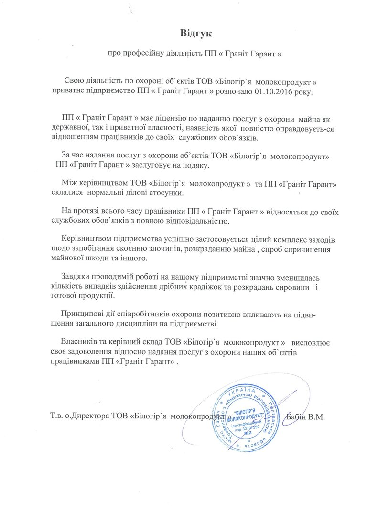
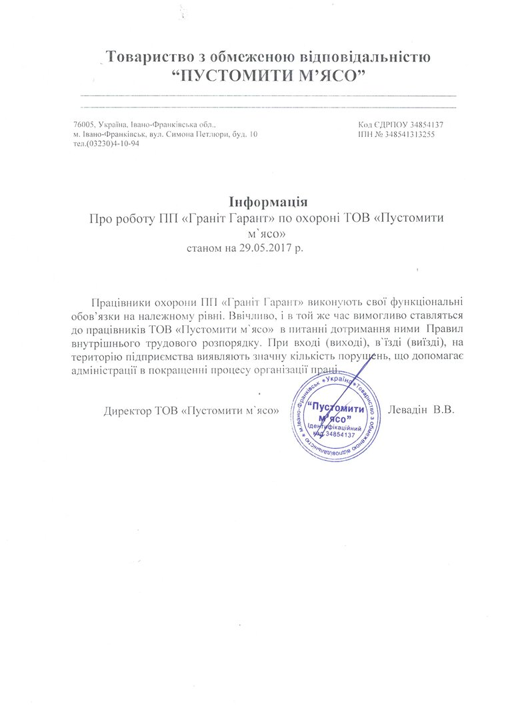
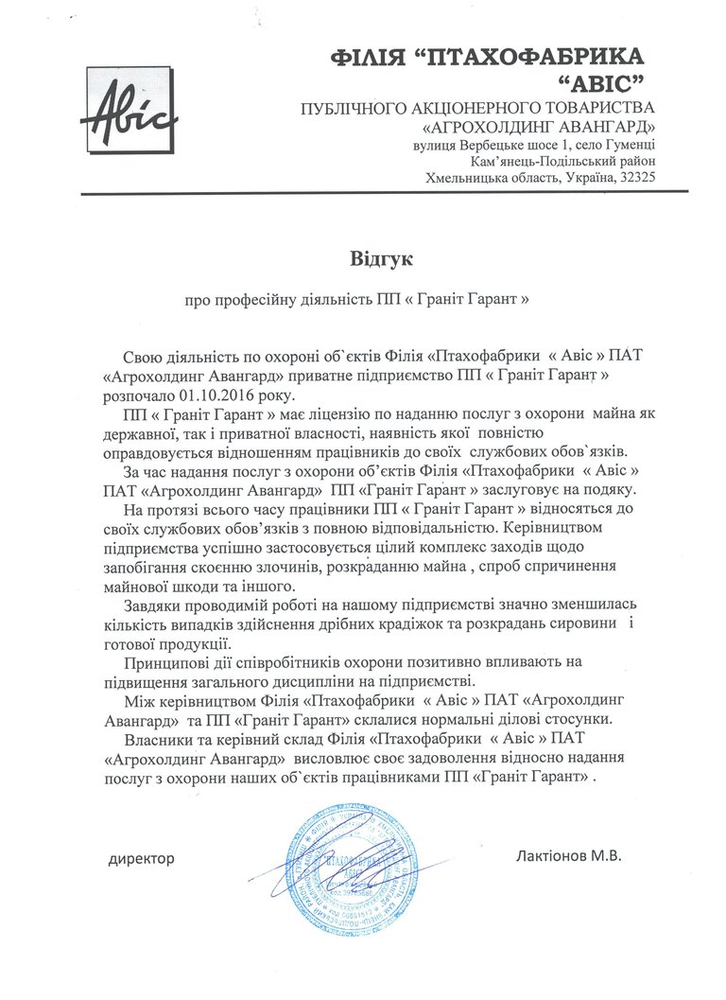

пропонує Вам розпочати активну співпрацю та партнерство в сфері безпеки, що надасть для Вашого підприємства цілодобову підтримку охоронної організації, допоможе зберегти та підтримати Ваш бізнес. За час роботи ми накопичили великий практичний досвід з організації охорони різного призначення, заслужили репутацію надійної і стабільної організації, що динамічно розвивається на ринку охоронних послуг.
Постійне підвищення кваліфікації нашими співробітниками і підтримка ними фізичної форми дозволяють нам надавати охоронні послуги на незмінно високому рівні. Особливу увагу керівництво компанії приділяє професійній підготовці співробітників охорони.
Всі наші клієнти можуть бути впевнені, що на варті їх інтересів стоять справжні професіонали.
та багато інших
| Види послуг | Грн. за люд/год (з ПДВ) | Грн. за місяць (з ПДВ) |
|---|---|---|
| Цілодобовий | 44.00 | 32 208 |
| Денний | 51.91 | 19 000 |
| Нічний | 57.37 | 21 000 |
| Супровід вантажу | 60.00 | 43 290 |
| Начальник охорони | 24 000 |
У вартість охоронних послуг входить:
Юридична адреса:
46023, м. Тернопіль, вул.15 квітня, буд. 6
Директор Погорілець Михайло Зіновійович:
(050)85-89-190, (098)88-02-037
Заступник директора Рапіта Роман Васильович: (096)974-07-02
Заступник директора Гуменяк Олександр Михайлович:
(067)68-74-185
Електронна адреса:
granit-garant@ukr.net
Відгуки від наших клієнтів:
"... керівний склад ТОВ "Білогір'я молокопродукт" висловлює своє задоволення відносно надання послуг з охорони наших об'єктів працівниками ПП "Граніт - Гарант"." - Бабін В.М. , ТОВ "Білогір'я молокопродукт"
"Працівники охорони ПП "Граніт - Гарант" виконують свої функціональні обовязки на належному рівні..." - Левадін В.В. , ТОВ "Пустомити м'ясо"
"... керівний склад Філія "Птахофабрики "Авіс" ПАТ "Агрохолдинг Авангард" висловлює своє задоволення відносно надання послуг з охорони наших об'єктів працівниками ПП "Граніт - Гарант"." - Лактіонов М.В. , Філія "Птахофабрики "Авіс" ПАТ "Агрохолдинг Авангард"